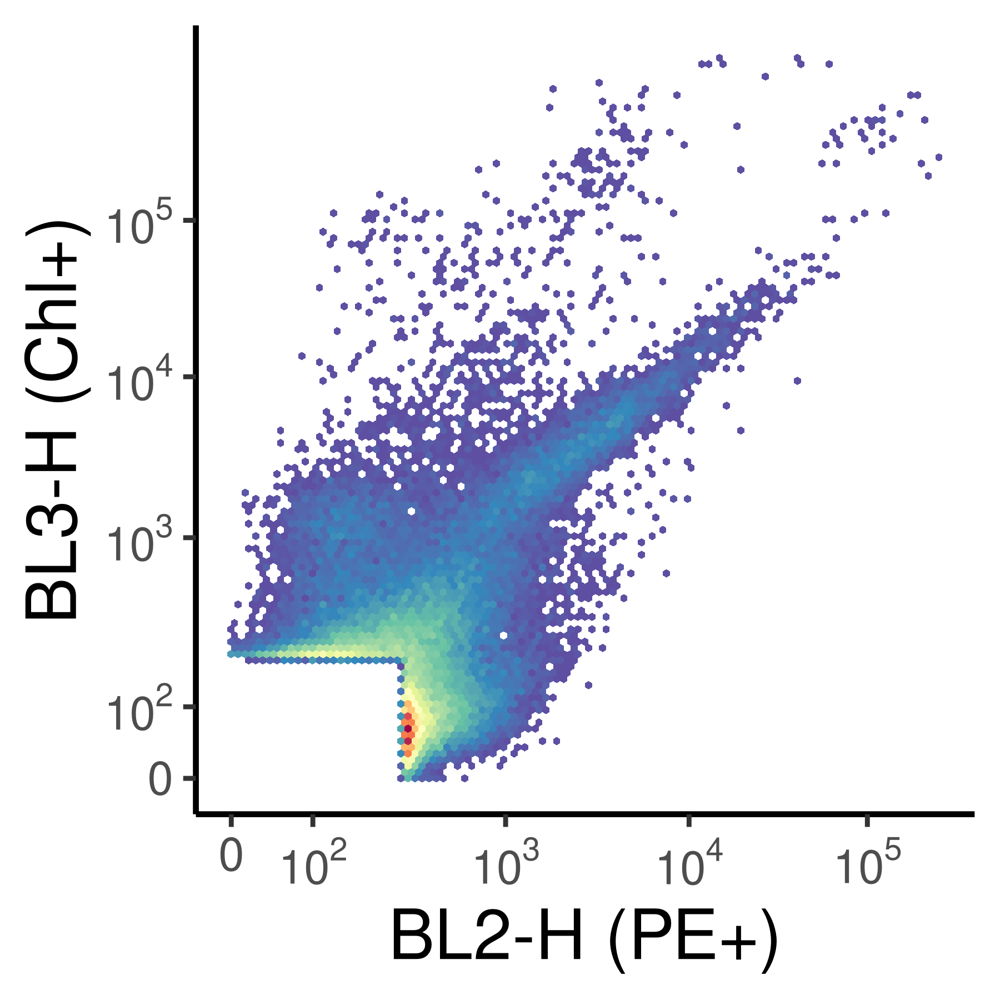
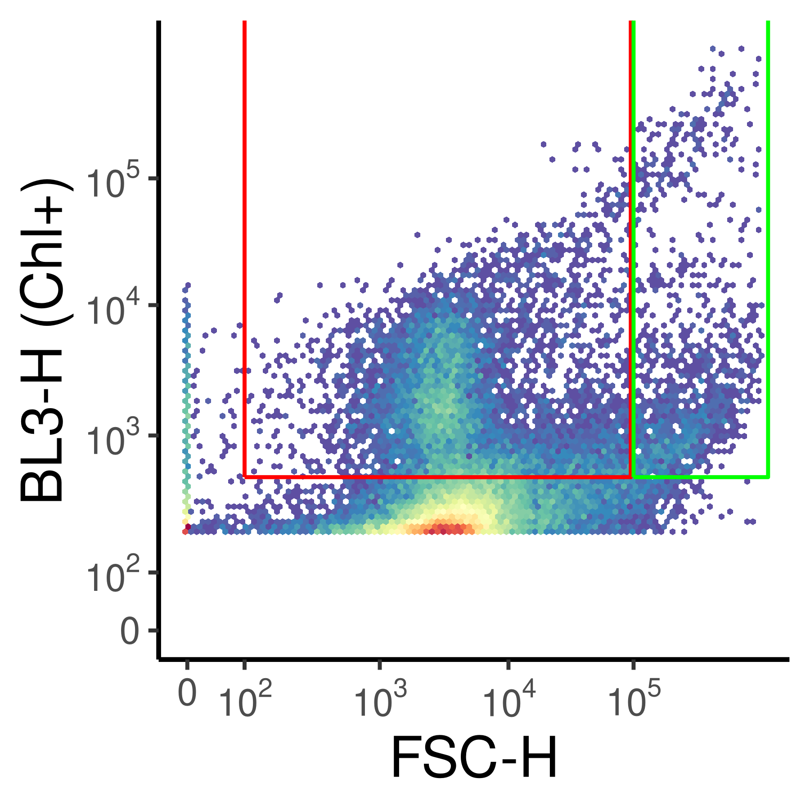
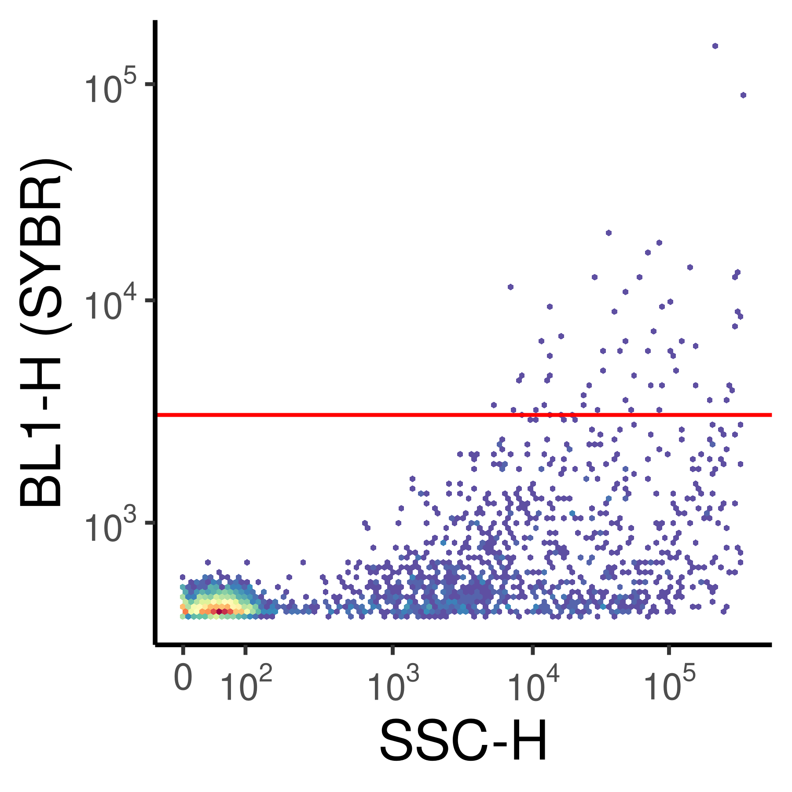
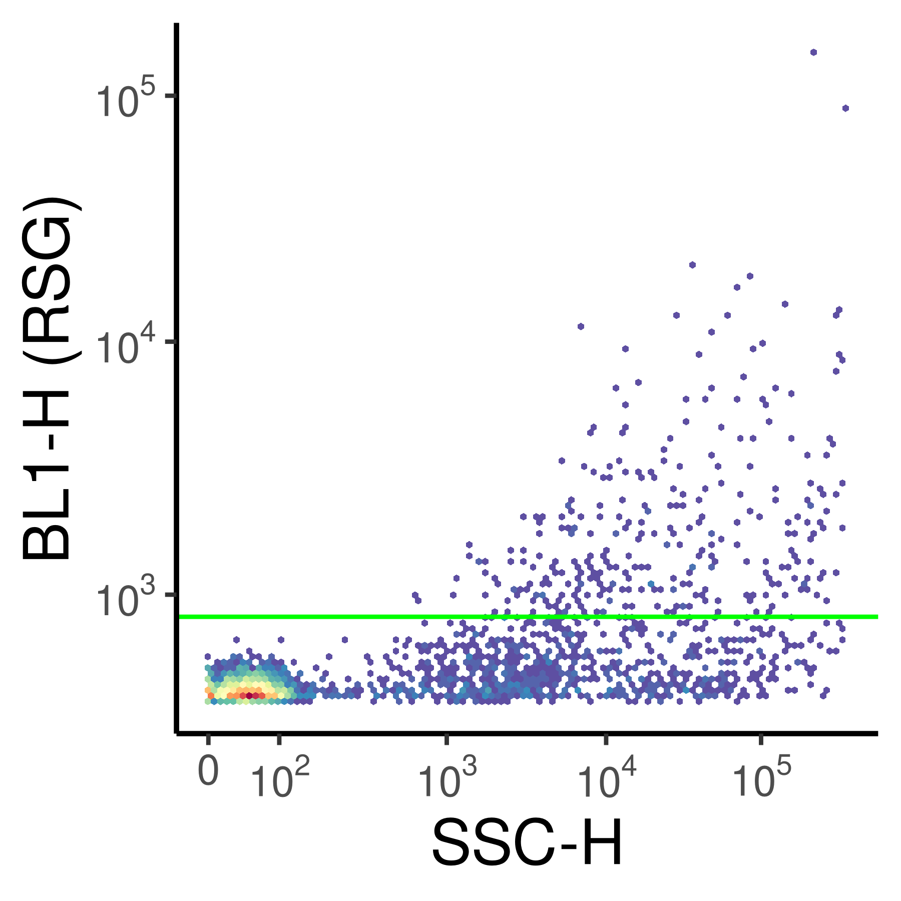
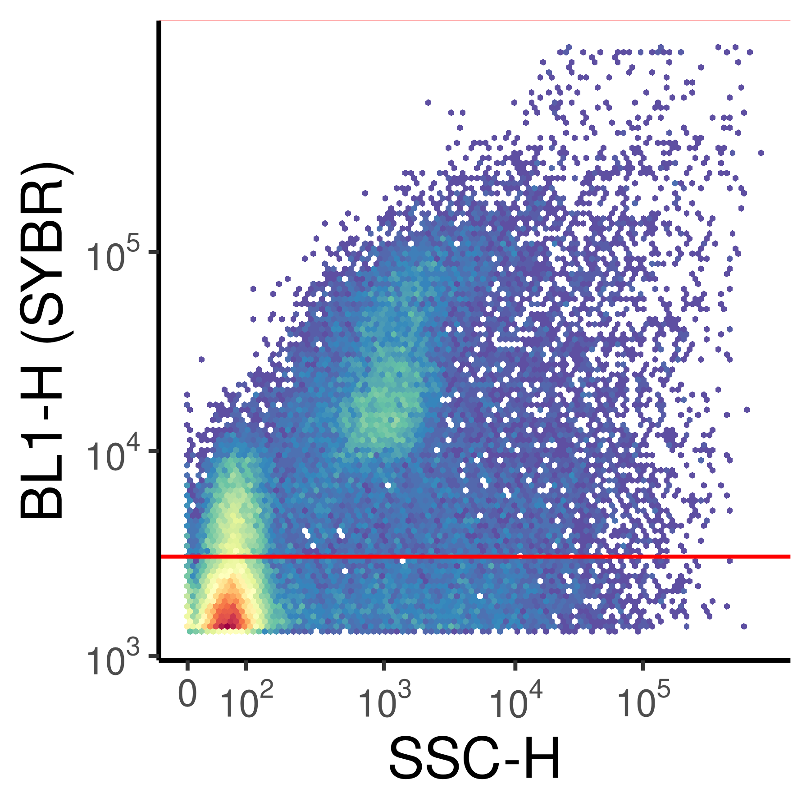
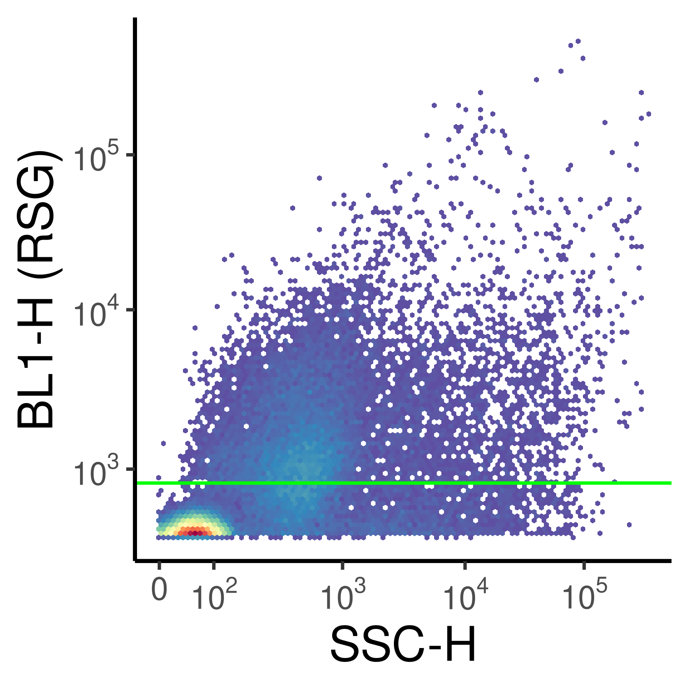
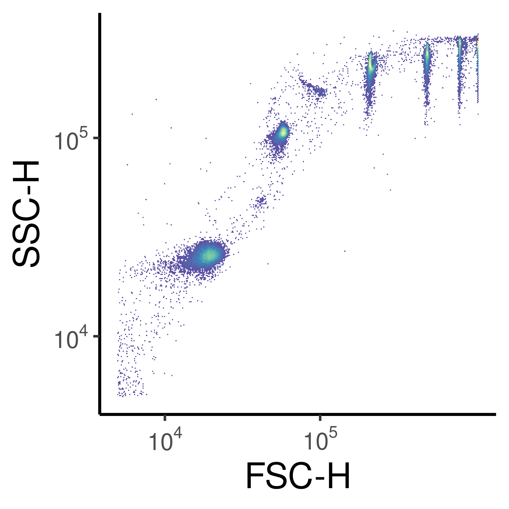
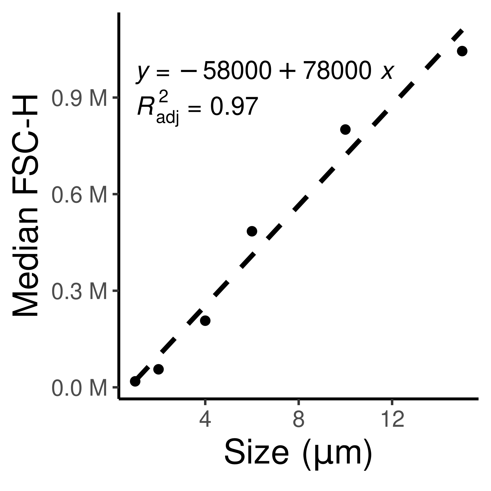

# Load Packages
# Installing flow.gus can be a pain!!! Here is what worked for me:
# remotes::install_github('RGLab/cytoinstaller', force=TRUE)
# devtools::install_github("RGLab/RProtoBufLib")
# devtools::install_github("RGLab/cytolib")
# devtools::install_github("RGLab/flowCore")
# renv::install("MarschmiLab/flow.gus")
pacman::p_load(ggpubr, phyloseq, flow.gus, flowCore, ggcyto, tidyverse, install = FALSE)
# load colors and shapes
source("code/R/plotting_aesthetics.R")Analyzing Flow Cytometry Data
Purpose of this document
Load Packages and Functions
Find fcs files
flow_files <- list.files("data/06_Flow_Cytometry/Demo_FSC_Counts/", pattern = ".fcs", full.names = TRUE)
unstained <- read.FCS("data/06_Flow_Cytometry/Demo_FSC_Counts/Sep_58_Unstained.fcs")
unstained_for_cells <- read.FCS("data/06_Flow_Cytometry/Demo_FSC_Counts/Sep_58_Unstained_SYBR.fcs")
sybr_stained <- read.FCS("data/06_Flow_Cytometry/Demo_FSC_Counts/Sep_58_SYBR.fcs")
rsg_stained <- read.FCS("data/06_Flow_Cytometry/Demo_FSC_Counts/Sep_58_RSG.fcs")Defining gates
sybr_gate <- rectangleGate(filterId = "cell_gate", "BL1-H" = c(3000, 1.5e6))
rsg_gate <- rectangleGate(filterId = "rsg_gate", "BL1-H" = c(825,1.5e6))
# In actual calculation, these are all the way past the limits, but for plotting it's easier to see if they are slightly smaller
chl_big <- rectangleGate(filterId = "is_big", "BL3-H" = c(500, 1e7), "FSC-H" = c(1e5, 1.2e6))
chl_small <- rectangleGate(filterId = "is_small", "BL3-H" = c(500, 1e7), "FSC-H" = c(100, 9.5e4))Plotting unstained phototrophs
ggcyto(unstained, aes(x = "BL2-H", y = "BL3-H")) +
geom_hex(bins = 100) +
scale_x_logicle() +
scale_y_logicle() +
theme(strip.text = element_blank()) +
labs(x = "BL2-H (PE+)", y = "BL3-H (Chl+)")
ggcyto(unstained, aes(x = "FSC-H", y = "BL3-H")) +
geom_hex(bins = 100) +
scale_x_logicle() +
scale_y_logicle(limits = c(200, 2e7)) +
geom_gate(chl_small, colour = "red") +
geom_gate(chl_big, colour = "green") +
theme(strip.text = element_blank())+
labs(x = "FSC-H", y = "BL3-H (Chl+)")
ggsave("test.png", width = 3, height = 3)ggcyto(unstained_for_cells, aes(x = "SSC-H", y = "BL1-H")) +
geom_hex(bins = 100)+
scale_x_logicle() +
scale_y_logicle() +
theme(strip.text = element_blank()) +
geom_gate(sybr_gate, color = "red") +
labs(y = "BL1-H (SYBR)", x = "SSC-H")
ggcyto(unstained_for_cells, aes(x = "SSC-H", y = "BL1-H")) +
geom_hex(bins = 100)+
scale_x_logicle() +
scale_y_logicle() +
theme(strip.text = element_blank()) +
geom_gate(rsg_gate, colour = "green")+
labs(y = "BL1-H (RSG)", x = "SSC-H")
ggcyto(sybr_stained, aes(x = "SSC-H", y = "BL1-H")) +
geom_hex(bins = 100)+
scale_x_logicle() +
scale_y_logicle() +
theme(strip.text = element_blank()) +
geom_gate(sybr_gate, color = "red")+
labs(y = "BL1-H (SYBR)", x = "SSC-H")
ggcyto(rsg_stained, aes(x = "SSC-H", y = "BL1-H")) +
geom_hex(bins = 100)+
scale_x_logicle() +
scale_y_logicle() +
theme(strip.text = element_blank()) +
geom_gate(rsg_gate, colour = "green") +
labs(y = "BL1-H (RSG)", x = "SSC-H")
Size Selection
size_beads <- list.files("/local/workdir/lab_data/flow_cytometry/20251209_CollectedPigment_Troubleshooting", pattern = "SizeBead", full.names = TRUE)
sb_fs <- read.flowSet(size_beads)
ssc_cell_gate <- rectangleGate(filterId = "cell_gate",
"FSC-H" = c(5000, 2e6),
"SSC-H" = c(5000, 2e6))
gs <- GatingSet(sb_fs)
gs_pop_add(gs, ssc_cell_gate)[1] 2recompute(gs)
gated <- gs_pop_get_data(gs, "cell_gate")
ggcyto(gated[8], aes(x = "FSC-H", y = "SSC-H")) +
geom_hex(bins = 300) +
scale_x_logicle() +
scale_y_logicle() +
theme(strip.text = element_blank()) +
labs(x = "FSC-H", y = "SSC-H")
meds <- map(gated[c(1:6)], \(x){
exprs(x) %>%
data.frame() %>%
pull(FSC.H) %>%
median()
})
fsc_res <- data.frame(FSCs = unlist(meds),
Size = c(10,15,1,2,4,6))
ggplot(fsc_res, aes(x = Size, y = FSCs)) +
geom_point() +
geom_smooth(method = "lm", se = FALSE, color = "black", linetype = 2) +
ggpubr::stat_regline_equation() +
ggpubr::stat_regline_equation(aes(label = after_stat(adj.rr.label)), label.y.npc = .85) +
labs(x = expression(Size~"("*mu*m*")"), y = "Median FSC-H") +
scale_y_continuous(label = scales::unit_format(unit = "M", scale = 1e-6))